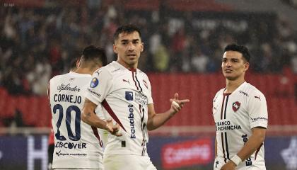

Fútbol
El fútbol ha sido mi pasión desde pequeño. Me gusta jugar con amigos, ver partidos y analizar estrategias. Además, me inspira la unión y el trabajo en equipo que este deporte promueve.
En mi tiempo libre disfruto realizar actividades que me permiten relajarme y mantenerme activo, combinando el entretenimiento con el aprendizaje y la salud física.
El fútbol ha sido mi pasión desde pequeño. Me gusta jugar con amigos, ver partidos y analizar estrategias. Además, me inspira la unión y el trabajo en equipo que este deporte promueve.
También disfruto de los videojuegos, especialmente los relacionados con el fútbol como FIFA. Este hobby no solo es una forma de diversión, sino también una manera de mejorar la concentración y la toma de decisiones rápidas.
La música forma una parte importante de mi día a día. Me acompaña cuando estudio, trabajo o simplemente quiero relajarme. Mi artista favorito es Bad Bunny, no solo por su estilo único y versátil, sino porque transmite emociones reales en cada canción. Me identifico con su forma de romper barreras, innovar y mantenerse auténtico sin importar las críticas. Sus letras me motivan a seguir mis metas con determinación y confianza.